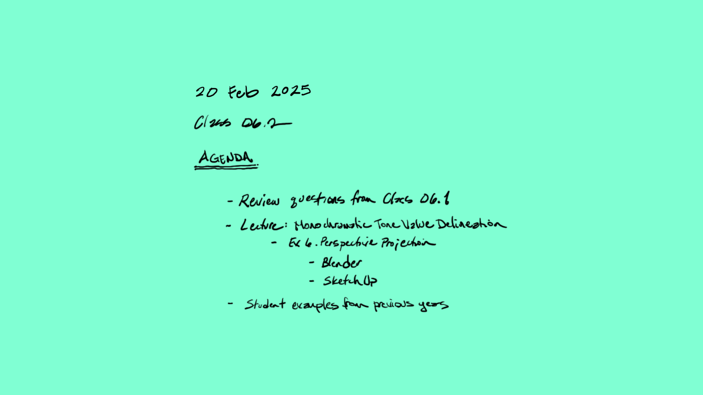
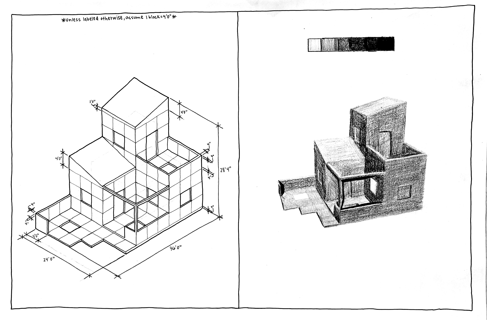
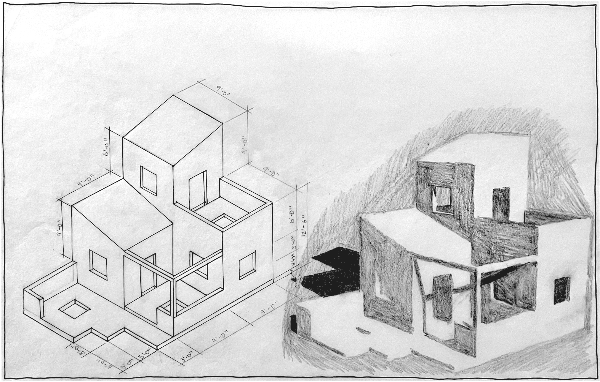

Today’s Agenda
Fig. 4.8 Exercise Six. Perspective Projection and Tone Value Render of a Small Guesthouse
Exercise Five and Six Layout Guide


 Fig. 4.8 Exercise Six. Perspective
Projection and Tone Value Render of a Small Guesthouse
Fig. 4.8 Exercise Six. Perspective
Projection and Tone Value Render of a Small Guesthouse
 Exercise Five and Six Layout
Guide
Exercise Five and Six Layout
Guide